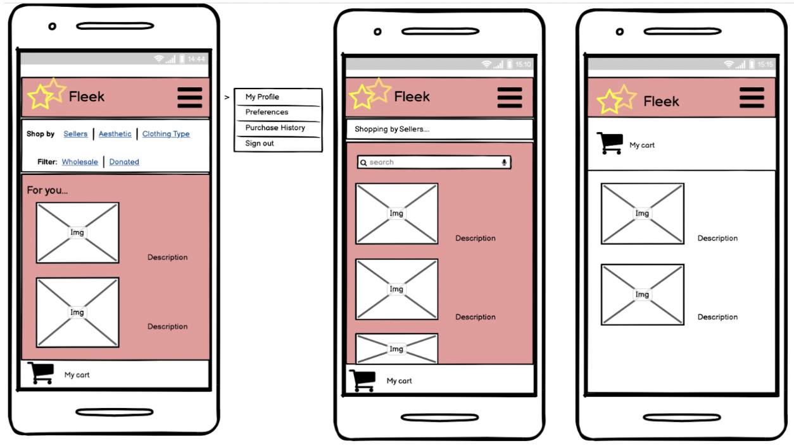
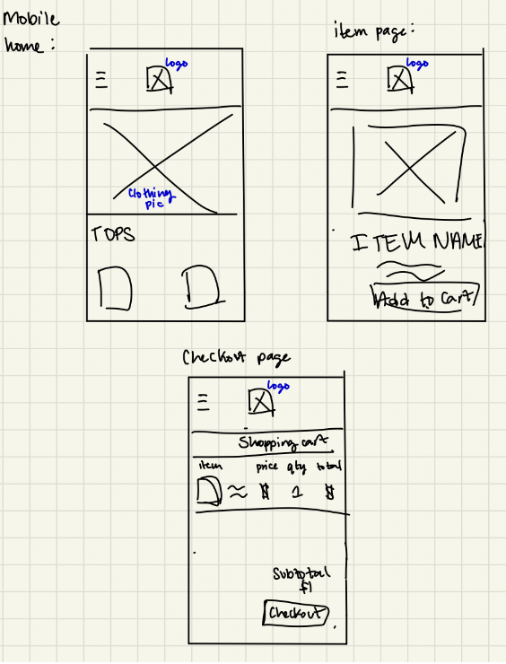

Iterative Design
Fleek
November 2022 - CSCI1300
Designing an app for a vintage wholesale marketplace with feedback and user testing
1. INTRODUCTION & PRE-DESIGN THINKING
We chose to design Fleek, which is a B2B Wholesale marketplace for second-hand fashion. This startup is targeted at a younger, millennial or Gen-Z audience (hence the name).
Buyers can buy clothing in bulk, often in the form of bundles, directly from the seller.
Buyers are comprised largely of vintage stores and online resellers.
Suppliers include clothing wholesalers, rag-houses, and donation centers.
We chose to design a mobile interface because it's easier to snap and then upload pictures this way,
the mobile interface makes it feel more interpersonal between buyers and sellers, the service is targeted
towards a younger and trendier audience, and finally, it creates a more social-media like experience
that will hopefully make the user feel like they're doing something fun rather than working.
2.1. FIVE MINUTE SKETCHES




2.2. LOW FIDELITY WIREFRAMES
Notes on our Design Decisions:
We decided at first to create an app the worked for the buyer and the seller, where you would
choose which one you wanted to be when you first set up an account. However, we ultimately
decided in response to the critique
that this was confusing and difficult for people who may want to do both.
We decided on a navigation bar at the bottom for easy, thumb-accessibe navigation, and we felt
that it was important to have a search page where you could discover, search and filter items,
a chat page where you could negotiate possible deals and connect with sellers/buyers, and a
profile page including your favorited/saved items. Searching is of course very important functionality,
but we wanted to add a profile and chat to foster more interpersonal connection.
Critique Feedback:
In response to the critique feedback we recieved, we added the chat and home screens, removed the option to be a seller
as were told that this option was confusing and figured the buyer and seller functions would be best implemented as two different apps.
We also added a list of favorited items and functionality to view order history, as per the crit feedback.
4.1. USER TESTING PREPARATION - TASK & QUESTIONS
BLURB:
This is not an actual website but an interactive mockup made on prototyping software.
You are a vintage shop called Nostalgia and you are buying wholesale vintage Harley Davidson
t-shirts for your shop. This website allows you to find businesses that sell vintage wholesale
products and buy their products.
TASKS:
Search for vintage tops
Filter for the Harley Davidson brand and select the Harley Tees Bundle
Add the Harley Tees Bundle to your cart
QUESTIONS:
On a scale from 1 to 5, how easy was it to know an item was added to the cart? (1 = very difficult, 5 = very easy)
On a scale from 1 to 5, how useful is the chat function to the experience of using an app like this? (1 = not useful at all, 5 = very useful)
On a scale from 1 to 5, how useful was the information on the Harley Tees Bundle item page? (1 = not useful at all, 5 = very useful)
On a scale from 1 to 5, how easy was it to navigate this app? (1 = very difficult, 5 = very easy)
4.3. USER TESTING ANALYSIS
The overall task we gave was to shop for a specific item bundle and add it to their cart,
which we split into the following subtasks: “search vintage tops, filter for the Harley Davidson
brand and select the Harley Tees Bundle, then add the bundle to your cart.” The users were successful
for each task and generally described the interface as “easy to use and navigate”.
While most users
did not face many issues, a point of error/confusion was the quantity vs amount of pieces shown when
shopping. Specifically, we ask the user to add a bundle to their cart, which includes 20 pieces, but
the quantity is listed as 1 because each bundle is 20 pieces. Users found that it might be a bit
confusing to list the quantity as 1 instead of 20.
Users were able to complete the tasks successfully
and pretty efficiently, though one user was unsure of completing a task because for our search function,
the user simply clicks the search bar, instead of typing the actual query.
Potential interface changes
we could make are clearly indicating that each bundle includes X pieces, so we can put conversions for
the quantities. For example, if each bundle includes 20 pieces, picking quantity 1 will show (20pc),
quantity 2 (40pc), etc. As well, we could have live time assistance with an employee through our chat
feature, which one user was hoping to see.